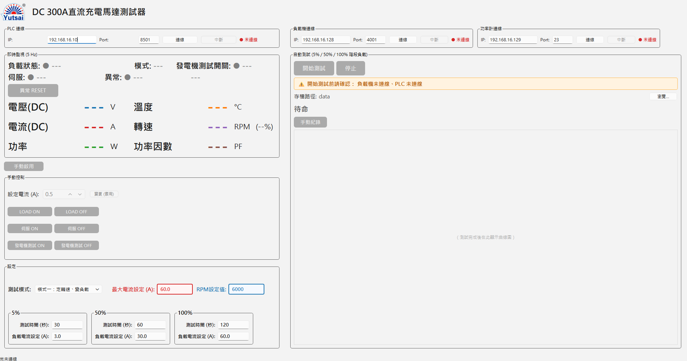

對象：操作本系統 GUI 進行 DC 發電機/充電馬達測試的現場人員
程式：ui/main_window.py（PyQt6），視窗標題「DC 300A直流充電馬達測試器」
整合儀器：PEL-5000C 電子負載、Keyence KV PLC、GPM-8310 功率計
本手冊只說明「畫面操作」。儀器接線、網路設定、CLI 測試腳本請看 docs/使用手冊.md。
在桌面上雙擊應用程式捷徑「DC發電機量測系統」即可啟動（執行檔為 DCGenTester.exe）。
%LocalAppData%\Programs\DCGenTester（即 C:\Users\<使用者>\AppData\Local\Programs\DCGenTester）；DCGenTester.exe 與 config.yaml 放在同一資料夾。config.yaml 內 plc.enabled: true / power_meter.enabled: true，程式啟動時會自動連線該儀器；否則需手動按「連線」。config.yaml 會跳出明確錯誤視窗 —— config.yaml 必須與 DCGenTester.exe 放在同一資料夾（用安裝精靈安裝時會自動處理）。config.yaml）。程式啟動後的完整畫面（三台儀器皆未連線時）：

畫面分左右兩欄：
每個連線框都有：IP 欄、Port 欄、「連線」鈕、「中斷」鈕、狀態燈（● 未連線 紅 / ● 已連線 綠）。三台儀器各自獨立，連線/中斷互不影響。
| 連線框 | 位置 | 現場 IP : Port | 角色 |
|---|---|---|---|
| 負載機連線 | 右欄上 | 192.168.16.128 : 4001 | PEL-5000C 電子負載，讀 V/I/P、CC 控制、LOAD ON/OFF |
| PLC 連線 | 左欄上 | 192.168.16.10 : 8501 | Keyence KV PLC，讀溫度/轉速/狀態、控制伺服/速度/發電機測試 |
| 功率計連線 | 右欄上 | 192.168.16.129 : 23 | GPM-8310，讀功率因數（PF） |
操作：
連線成功後 IP/Port 欄會鎖住，要改需先「中斷」。
負載機一連上即進入遠端（REMOTE）並切到 CC 模式；中斷時會自動送LOAD OFF+LOCAL（硬體安全網）。
左欄「即時監視 (5 Hz)」，由負載機/PLC/功率計三條背景執行緒各自更新。
| 項目 | 來源 | 單位 |
|---|---|---|
| 電壓(DC) | 負載機 | V |
| 電流(DC) | 負載機 | A |
| 功率 | 負載機 | W |
| 溫度 | PLC（DM7000） | °C |
| 轉速 | PLC（DM7006 主值；旁邊括弧為 DM7001 的 %） | RPM |
| 功率因數 | 功率計 | PF |
未連線或讀不到時顯示 ---。功率計遇到超量程/無資料時，PF 會顯示 0.0000 但維持連線繼續輪詢。
第一行
● LOAD ON（綠）/ ● LOAD OFF（灰）— 負載機輸出開關。● ON（綠）/ ● OFF（紅）— PLC 繼電器（MR103）。第二行
● ON（綠）/ ● OFF（紅）— 伺服馬達狀態（PLC DM7003）。● 正常（綠）/ ● 異常（紅）— PLC DM7004。右側「異常訊息」會逐 bit 解碼（bit0＝緊急停止、bit1＝馬達驅動器異常，其餘顯示 bitN）。位於「異常」狀態下一行的橘色按鈕。只要 PLC 已連線即可按（不受測試中鎖定），按下會送出 PLC 異常 RESET 繼電器（MR502）。
「手動控制」框上方有一顆「手動啟用」按鈕，是整個手動控制區的總閘門。
| 控制 | 動作 | 啟用條件 |
|---|---|---|
| 設定電流 (A) + 「變更(套用)」 | 把 CC 電流值寫入負載機（不重切模式） | 負載機連線 + 手動啟用 ON |
| LOAD ON / LOAD OFF | 負載機輸出開/關 | 負載機連線 + 手動啟用 ON |
| 伺服 ON / 伺服 OFF | PLC 伺服繼電器（MR100）ON/OFF | PLC 連線 + 手動啟用 ON |
| 發電機測試 ON / OFF | PLC 繼電器（MR103）ON/OFF | PLC 連線 + 手動啟用 ON |
| 速度設定 (RPM) + 「速度設定」/「停止」 | 把 RPM 直接寫入 PLC（DM102） | PLC 連線 + 伺服 ON（與手動啟用脫鉤） |
速度設定列只在 PLC 的速度控制來源為「自動控制速度」（DM7002=1）時才顯示；「手動控制速度」時隱藏（此時速度由實體手動端控制，UI 設定無意義）。
自動測試進行中，整個手動控制框會被鎖定（自動序列獨占負載機）。
在「設定」框最上方的「測試模式」下拉選擇：
| 模式一 | 模式二 | |
|---|---|---|
| 名稱 | 定轉速、變負載 | 定負載、變轉速 |
| 固定的量 | 轉速（RPM設定值）固定一次 | 負載電流（固定負載電流）固定一次 |
| 逐階段改變的量 | 負載電流（各階段「負載電流設定 A」） | 轉速（各階段「轉速設定 RPM」） |
| 三階段標題 | 5% / 50% / 100% | 速度一 / 速度二 / 速度三 |
| 計算器 | 改「最大電流設定」→ 按百分比自動填回三階段電流 | 改「最大RPM設定」→ 不自動帶入（各階段轉速自行輸入） |
「設定」框（自動測試開始前可改，測試中/手動紀錄中會整框鎖定）。
「最大電流設定」變更時，會依各階段百分比（5/50/100）自動填回三階段的「負載電流設定」；你仍可手動覆寫某一階段的值。
每個群組（5%/50%/100% 或 速度一/二/三）內含：
所有欄位變更會即時存檔，下次開啟沿用。
「自動測試」框內「開始測試」鈕下方有一條提醒列：
⚠ 開始測試前請確認： 負載機未連線、伺服未 ON、速度未切至自動。✓ 條件齊全，可開始測試，「開始測試」鈕才會亮。開始測試所有前置條件：
config.yaml 設 power_meter.enabled: true）已連線；未啟用則不檢查「存檔路徑」列顯示目前 CSV + 曲線圖的存檔資料夾，按「瀏覽…」可更改（會記住）。預設取自 config.yaml 的 output.save_dir。
已經過 / 總時間 秒 剩 N s。dut.voltage_max / dut.current_max 會先 LOAD OFF 再中止測試並回報。「停止」會中止序列並照常存檔已取得的資料。
直接關閉視窗時，若測試仍在跑，程式會先把轉速歸 0、相關繼電器關閉、負載機 LOAD OFF 再離開。
「手動紀錄」是與自動流程無關的被動記錄器，用於一邊手動操作一邊記資料。
自動測試與手動紀錄共用同一套輸出，存到「存檔路徑」資料夾，檔名為時間戳記（例 20260611_153012）：
<時間>.csv：原始取樣資料（utf-8-sig 編碼，Excel 直接開不亂碼）。<時間>.png：曲線圖（格式取自 config.yaml 的 output.plot_format）。CSV 欄位：
| 欄位 | 說明 |
|---|---|
timestamp | 取樣時間 |
elapsed_s | 從測試起算的經過秒數 |
stage | 階段標籤（如 50% / 速度二；手動紀錄為空） |
set_current_A | 該筆的設定負載電流 |
V / I / P | 負載機量測電壓/電流/功率 |
temperature | PLC 溫度（無則空白） |
rpm | PLC 轉速（無則空白） |
power_factor | 功率計 PF（無則空白） |
檔案以時間戳命名，永不覆蓋。
| 顏色 | 含義 |
|---|---|
| 綠色 ● | 正常 / ON / 已連線 / 條件齊全 |
| 紅色 ● | OFF / 未連線 / 異常 |
| 灰色 ● 或 --- | 未知 / 尚未連線 / 無資料 |
| 橘底提醒列 | 前置條件未齊（列出缺項） |
| 手動控制框淺綠背景 | 手動啟用（MR102/DM7005）為 ON |
| 「手動啟用」鈕綠/藍 | 綠＝作用中、藍＝未啟用 |
| 按鈕 | 何時可按 |
|---|---|
| 各「連線」鈕 | 該儀器未連線時 |
| 各「中斷」鈕 | 該儀器已連線時（手動紀錄/自動測試中，負載機中斷鈕會暫時停用） |
| 手動啟用 | PLC 已連線 |
| 異常 RESET | PLC 已連線（測試中也可按） |
| 設定電流 / 變更 / LOAD ON·OFF | 負載機連線 + 手動啟用 ON + 非測試中 |
| 伺服 ON·OFF / 發電機測試 ON·OFF | PLC 連線 + 手動啟用 ON + 非測試中 |
| 速度設定 / 停止 | PLC 連線 + 伺服 ON |
| 開始測試 | 6 項前置條件全齊 + 非測試中 + 非手動紀錄中 |
| 停止（測試） | 測試進行中 |
| 手動紀錄 | 負載機連線 + 非測試中 |
Q1. 「開始測試」一直是灰的
看提醒列缺哪幾項：通常是負載機/PLC/功率計沒連、伺服沒 ON、或速度沒切到自動。逐項補齊後即會轉綠。
Q2. 手動控制框內按鈕都灰灰的按不動
先按上方「手動啟用」，框背景轉淺綠後框內按鈕才會啟用。伺服/速度另需 PLC 連線；速度設定還需伺服 ON。
Q3. 看不到「速度設定」那一列
速度列只在 PLC「自動控制速度」（DM7002=1）時顯示。切到手動控制速度時會隱藏。
Q4. 功率因數顯示 0.0000
功率計回報超量程/無資料（純 DC 下常見），連線仍正常、會繼續輪詢，不影響其他量測。
Q5. 某儀器連線失敗
只會在最底狀態列提示，不影響其他兩台。確認 IP/Port、網路與該儀器電源，再重按「連線」。連線層級錯誤（逾時/斷線）會自動中止該儀器輪詢並回到未連線。
Q6. 測試中途自動停止並顯示「測試失敗」
多半是 V 或 I 超過 config.yaml 的 dut.voltage_max / dut.current_max 保護上限，系統已先 LOAD OFF。檢查接線與負載設定後再試。
Q7. 關掉程式後負載沒關
正常關閉會自動送 LOAD OFF + LOCAL。若異常結束，到 PEL-5000C 前面板手動按 LOAD 關閉，再重連即可恢復遠端控制。